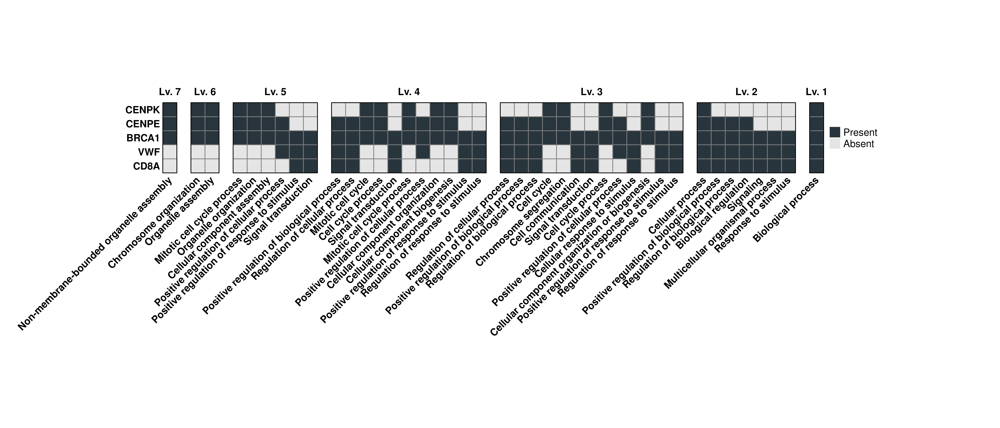
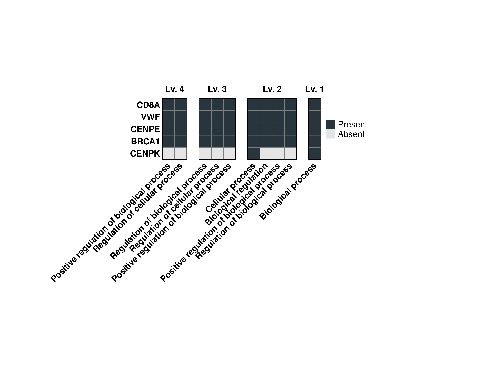
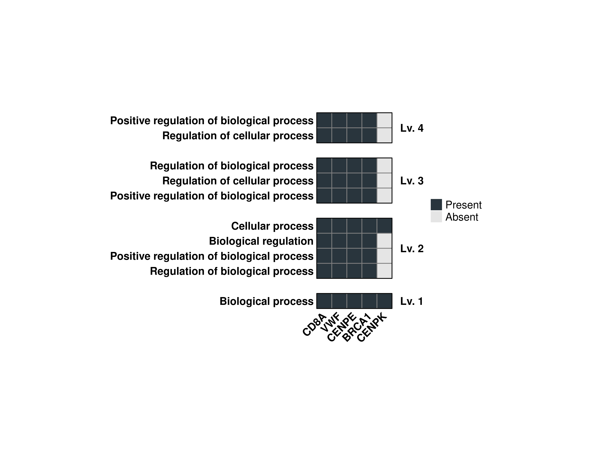
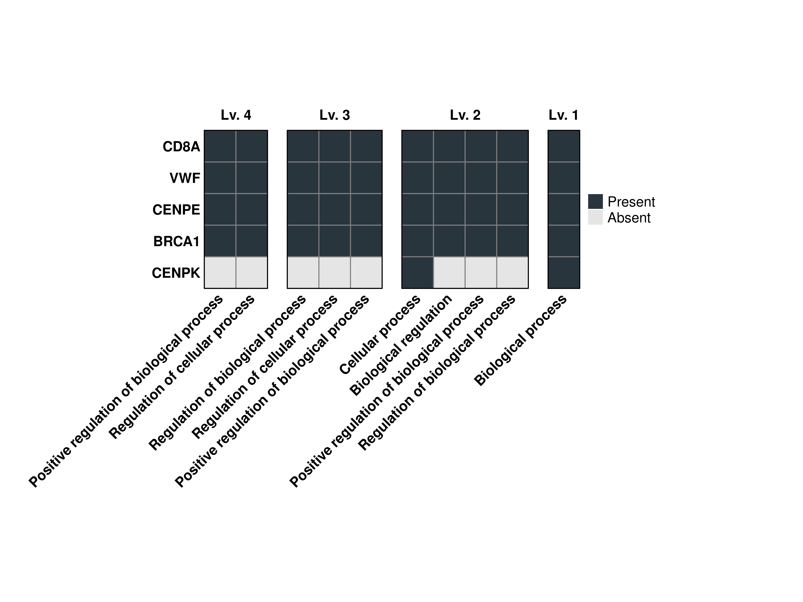
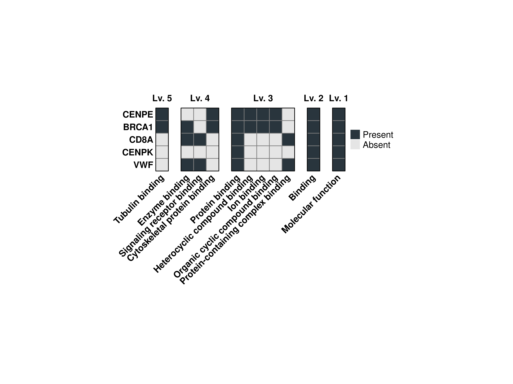
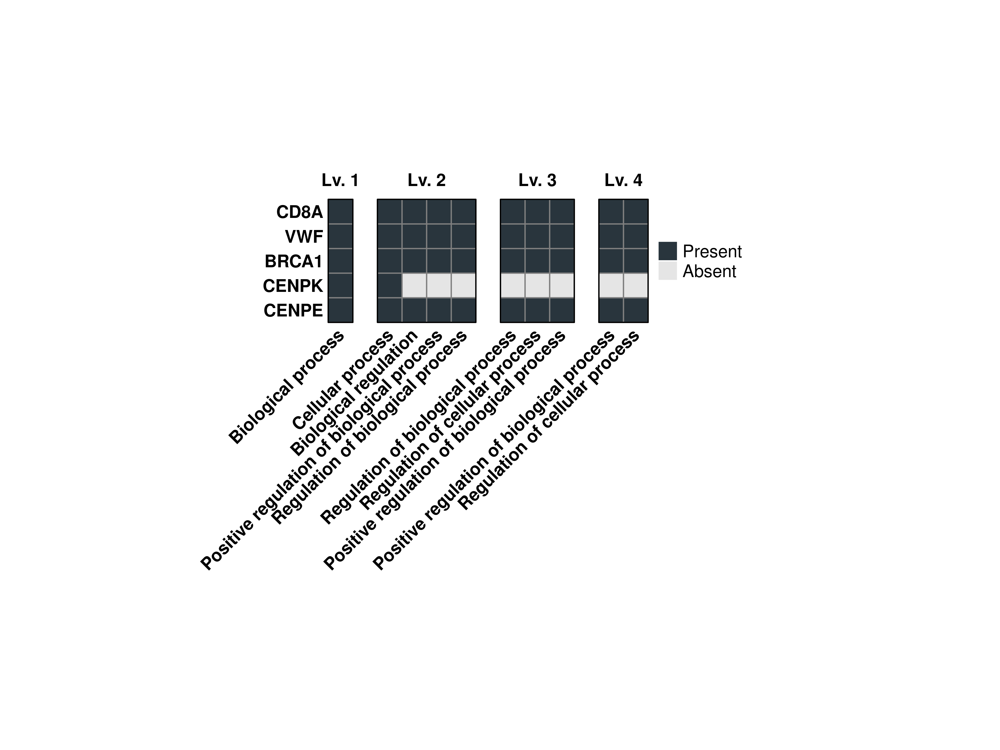
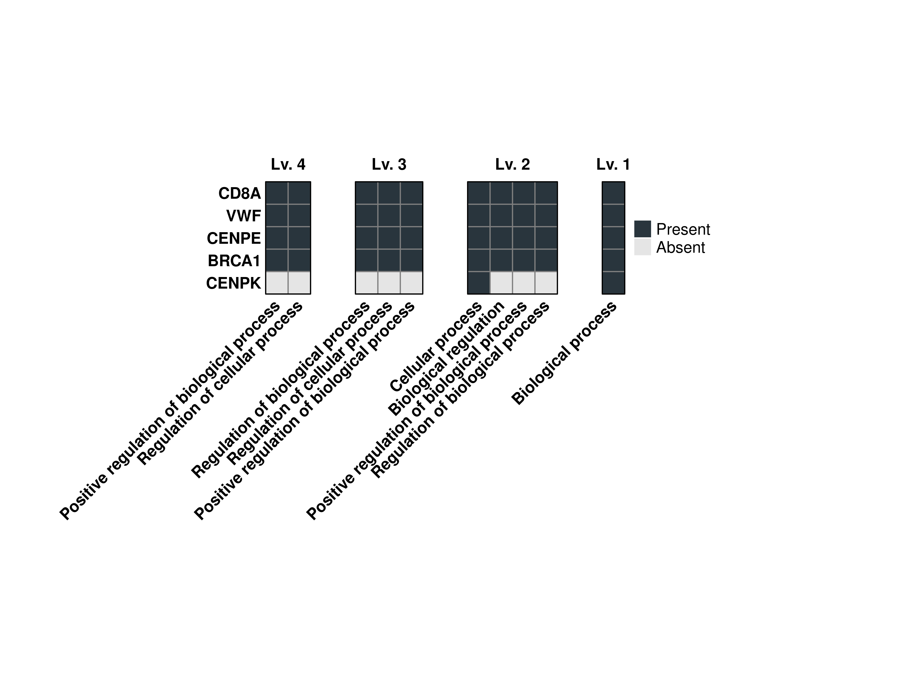
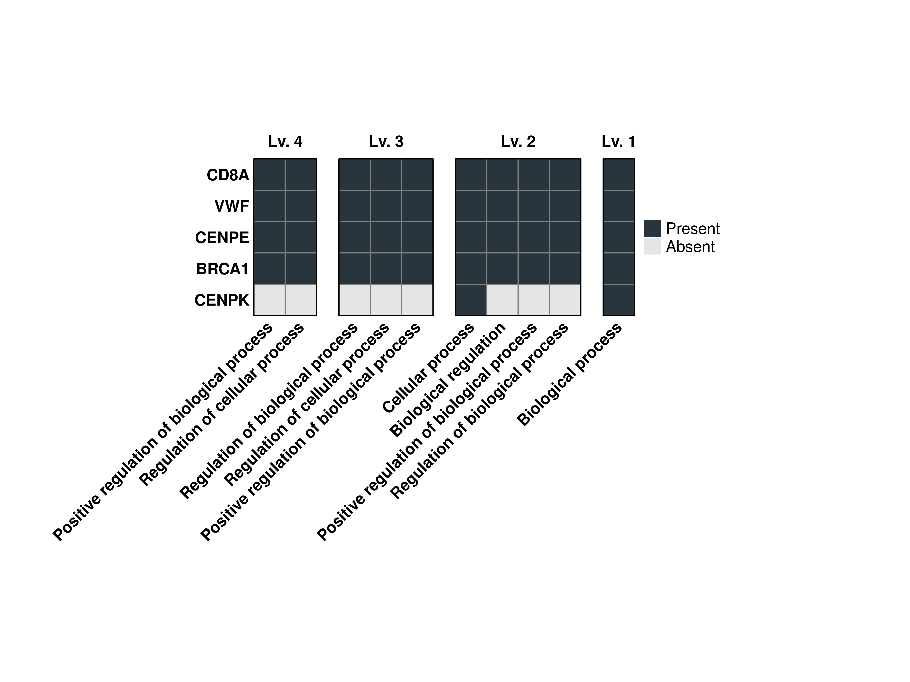
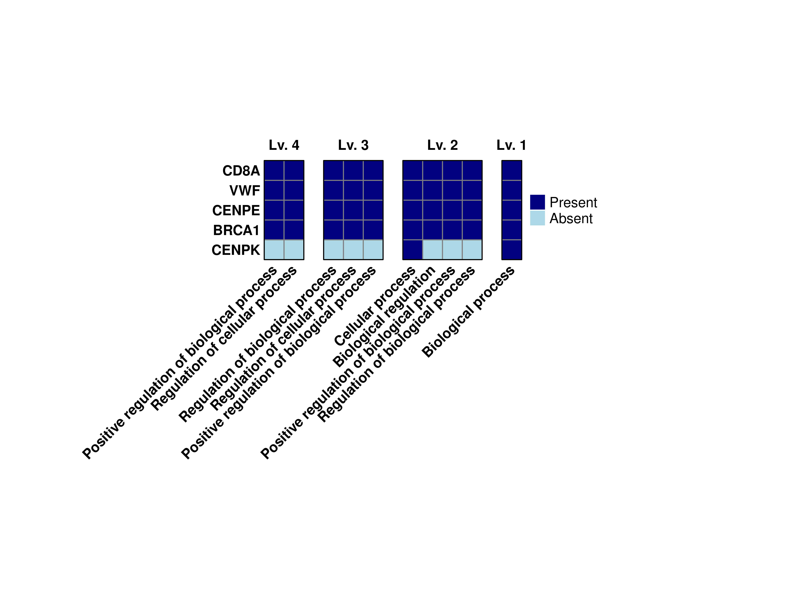

genes.use <- c("CENPK", "CENPE", "BRCA1", "VWF", "CD8A")
# Compute the grouped GO terms.
out <- SCpubr::do_GroupedGOTermPlot(genes = genes.use,
org.db = org.Hs.eg.db)16 Grouped GO Term analysis plots
More often than not in a Single-Cell Transcriptomics analysis, one comes across a list of genes. This might be the result of computing Differentially Expressed genes, running Non-Negative Matrix Factorization, for instance. In order to get a sense of what the role that the genes in the list play, we can make use of clusterProfiler package. This package has, among other incredible functions, one called groupGO(), which outputs a matrix of the GO terms associated with the genes in the list, across the different GO ontologies and levels.
SCpubrmakes use of these output matrices and represent them as heatmaps with the SCpubr::do_GroupedGOTermPlot() function.
16.1 Basic usage
The basic usage of this function will compute all the GO terms associated with the genes for the Biological Process ontology, and return all the matrices for all the levels as well as the individual heatmaps for each level plus a combined one with all of them. All of this is returned as a list object, that we can then navigate to obtain the plot/matrix that we want. We will also need a database object, such as the one provided by the org.Hs.eg.db package.
Here is how the one of the output matrices looks like:
# Retrieve one of the output matrices.
head(out$Matrices$BP$`Lv. 3`)
#> ID
#> GO:0050794 GO:0050794
#> GO:0048518 GO:0048518
#> GO:0050789 GO:0050789
#> GO:0007049 GO:0007049
#> GO:0007059 GO:0007059
#> GO:0007154 GO:0007154
#> Description Count
#> GO:0050794 Regulation of cellular process 4
#> GO:0048518 Positive regulation of biological process 4
#> GO:0050789 Regulation of biological process 4
#> GO:0007049 Cell cycle 3
#> GO:0007059 Chromosome segregation 3
#> GO:0007154 Cell communication 3
#> GeneRatio geneID
#> GO:0050794 4/5 CENPE/BRCA1/VWF/CD8A
#> GO:0048518 4/5 CENPE/BRCA1/VWF/CD8A
#> GO:0050789 4/5 CENPE/BRCA1/VWF/CD8A
#> GO:0007049 3/5 CENPK/CENPE/BRCA1
#> GO:0007059 3/5 CENPK/CENPE/BRCA1
#> GO:0007154 3/5 BRCA1/VWF/CD8AAnd this is the output combined heatmap:
# Plot the output combined heatmap.
out$Plots$BP$Combined
Please note:
This function might take a while to compute, specially for the Biological Process ontology. If you are running it interactively, consider passing verbose = TRUE to see the process.
16.2 Control the clustering of the rows and columns
By default, both rows and columns are clustered to group the terms together. If one wants to customize this behaviour, we just need to pass cluster_cols = FALSE or cluster_rows = FALSE to the function:
# Compute the grouped GO terms.
out <- SCpubr::do_GroupedGOTermPlot(genes = genes.use,
org.db = org.Hs.eg.db,
cluster_rows = FALSE,
cluster_cols = FALSE)
# Plot the output combined heatmap.
out$Plots$BP$Combined
16.3 Limit the number of terms reported
By default, the terms displays have to be shared in between three of the genes if the provided list of genes has more than four genes. However, we can control this behavior using min.overlap:
# Compute the grouped GO terms.
out <- SCpubr::do_GroupedGOTermPlot(genes = genes.use,
org.db = org.Hs.eg.db,
min.overlap = 4)
# Plot the output combined heatmap.
out$Plots$BP$Combined
16.4 Flip the output heatmap
We might as well be interested in having a vertically-aligned heatmap instead. This can be achieved by using flip = FALSE (as the default version is already flipped).
# Compute the grouped GO terms.
out <- SCpubr::do_GroupedGOTermPlot(genes = genes.use,
org.db = org.Hs.eg.db,
min.overlap = 4,
flip = FALSE)
# Plot the output combined heatmap.
out$Plots$BP$Combined
16.5 Restrict the ontology levels
If we are sure of which ontology levels we want to display the terms, we can restrict the output to those by using levels.use. This works in combination with min.overlap.
# Compute the grouped GO terms.
out <- SCpubr::do_GroupedGOTermPlot(genes = genes.use,
org.db = org.Hs.eg.db,
min.overlap = 4,
levels.use = c(1, 2, 3, 4))
# Plot the output combined heatmap.
out$Plots$BP$Combined
16.6 Select other GO ontologies
We can retrieve terms for other GO ontologies by using GO_ontology parameter with either:
- BP: For Biological Process.
- MF: For Molecular Function.
- CC: For Cellular Component.
# Compute the grouped GO terms.
out <- SCpubr::do_GroupedGOTermPlot(genes = genes.use,
org.db = org.Hs.eg.db,
min.overlap = 2,
GO_ontology = "MF")
# Plot the output combined heatmap.
out$Plots$MF$Combined
16.7 Reverse the order of the heatmaps
As can be noticed, the heatmaps are ordered in inverse order. This is due to the fact that ComplexHeatmap arranges the alignment of heatmaps using one as a principal heatmap. By using the normal ordering, the rows are columns, that are clustered, will be done based on the low-level terms instead of the most specific ones. However, this behaviour can be reverted using reverse.levels = FALSE.
# Compute the grouped GO terms.
out <- SCpubr::do_GroupedGOTermPlot(genes = genes.use,
org.db = org.Hs.eg.db,
min.overlap = 4,
levels.use = c(1, 2, 3, 4),
reverse.levels = FALSE)
# Plot the output combined heatmap.
out$Plots$BP$Combined
16.8 Increase the gap between heatmaps
By default, this is set to 0.5 cm by the heatmap_gap parameter.
# Compute the grouped GO terms.
out <- SCpubr::do_GroupedGOTermPlot(genes = genes.use,
org.db = org.Hs.eg.db,
min.overlap = 4,
levels.use = c(1, 2, 3, 4),
heatmap_gap = 1)
# Plot the output combined heatmap.
out$Plots$BP$Combined
16.9 Increase the cell size of the heatmap
We can modify the tile size of the heatamaps by using cell_size paramter:
# Compute the grouped GO terms.
out <- SCpubr::do_GroupedGOTermPlot(genes = genes.use,
org.db = org.Hs.eg.db,
min.overlap = 4,
levels.use = c(1, 2, 3, 4),
cell_size = 7)
# Plot the output combined heatmap.
out$Plots$BP$Combined
16.10 Modify default colors
Finally, we can modify the default colors of the heatmap by using colors.use and provide two colors. The first will map to the absent values and the second to the present values.
# Compute the grouped GO terms.
out <- SCpubr::do_GroupedGOTermPlot(genes = genes.use,
org.db = org.Hs.eg.db,
min.overlap = 4,
levels.use = c(1, 2, 3, 4),
colors.use = c("lightblue", "navyblue"))
# Plot the output combined heatmap.
out$Plots$BP$Combined